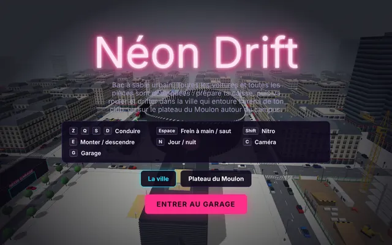
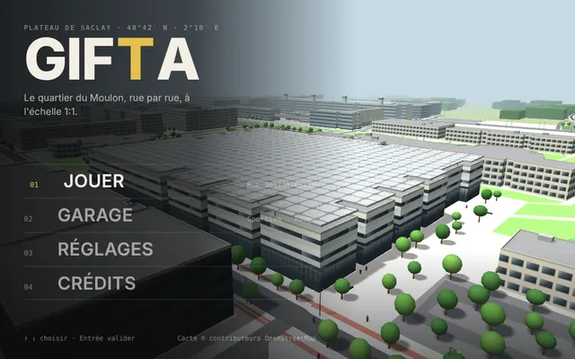
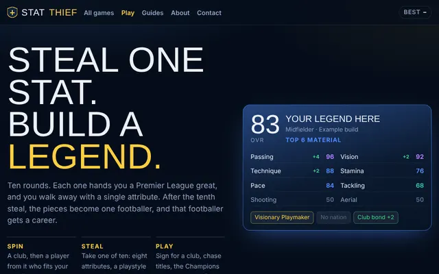
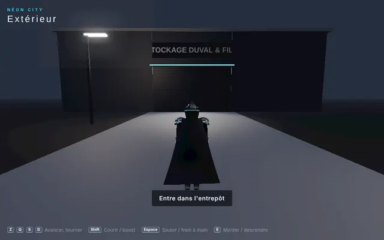
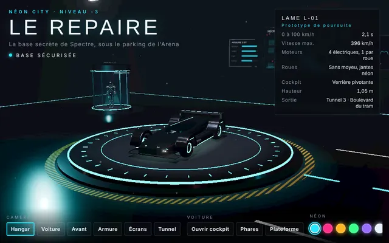
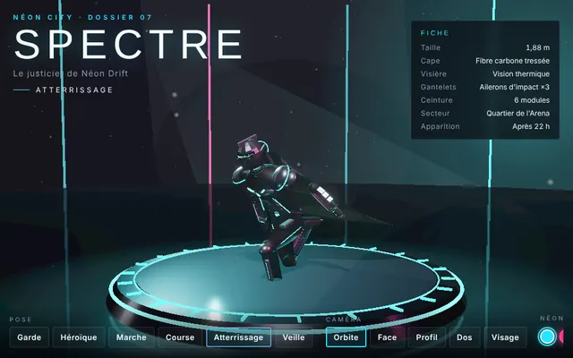
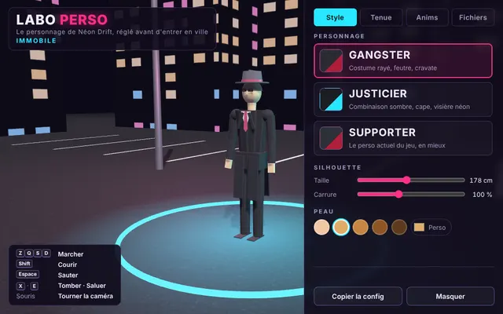

Mes jeux, tous au même endroit.
De la conduite en 3D sur le plateau du Moulon, une ville néon à explorer, et un jeu de draft de football. Rien à installer : clique et joue.
Les jeux

Néon Drift
Prépare ta voiture au garage, puis roule, drifte et saute dans la ville autour de l'arena, ou sur le plateau du Moulon reconstruit depuis OpenStreetMap.

Gif T A
Le quartier du Moulon, rue par rue, à l'échelle 1:1. Trois voitures, la ligne 18 du métro à conduire, la météo, l'heure du jour et les feux tricolores.

Stat Thief
Vole une statistique par tour à des joueurs de Premier League, construis une légende en dix tours, puis joue toute sa carrière. Un nouveau draft chaque jour.
L'univers Néon City
Les coulisses de Néon Drift, à explorer à part.

La Planque
Un entrepôt anodin, un monte-charge, une base secrète et une supercar à prendre en main.

Le Repaire
La base de Spectre au niveau -3, sous le parking de l'Arena, et sa voiture de poursuite LAME L-01.

Spectre
Le justicier de Néon Drift en studio : poses, angles de caméra et couleurs de néon.

Labo Perso
Règle ton personnage avant d'entrer en ville : style, tenue, silhouette et animations.